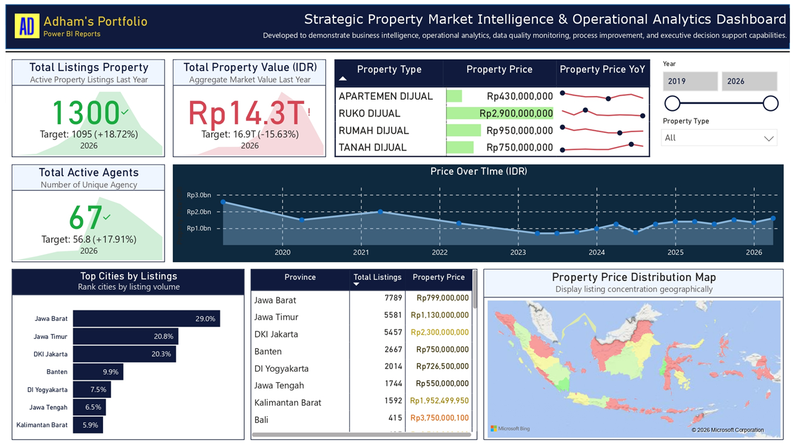
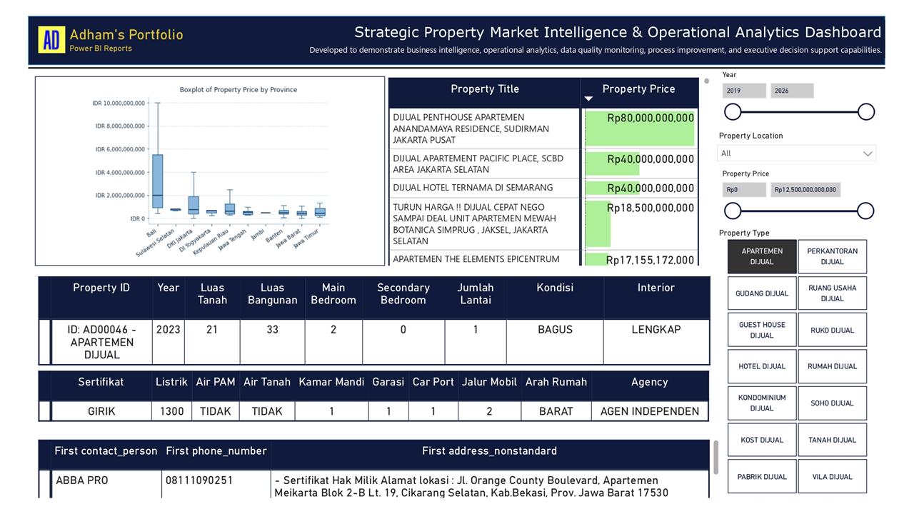

Market Pulse
Total listings, property value, and active agents provide a fast monthly health check for the market snapshot.
This dashboard combines strategic market monitoring and operational property analytics. The first view provides executive-level KPI and trend signals, while the second view supports record-level property exploration for tactical decisions.
Data used in this dashboard comes from My Project 002 (End-to-End Property Data Solutions).
The executive dashboard highlights portfolio scale, total market value movement, active agency footprint, regional listing concentration, and price trends over time.

Total listings, property value, and active agents provide a fast monthly health check for the market snapshot.
City and province comparison reveals where listing supply is concentrated and where pricing differs across Java and other regions.
The property finder view focuses on detailed filtering by year, location, price range, and property type, then surfaces item-level attributes such as bedroom counts, certificates, utilities, access, and agency contact.

Analysts can narrow to specific market segments and instantly compare available listings against budget and feature requirements.
Rich property metadata and contact fields support faster shortlist creation and follow-up with relevant agencies.
This project demonstrates end-to-end analytics delivery from data processing to interactive reporting and API consumption.
Designed executive KPI dashboards and drill-down views for strategic and operational decision support.
Prepared and structured raw property data into analysis-ready datasets with clear dimensions and metrics.
Created Flask API endpoints to get the data as JSON for dashboard use and external integration.
Connected dashboard workflows with PostgreSQL and automation pipelines to keep reporting outputs updated.